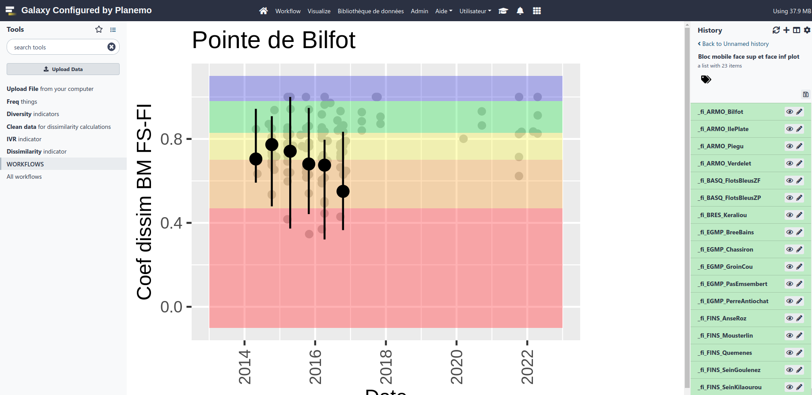
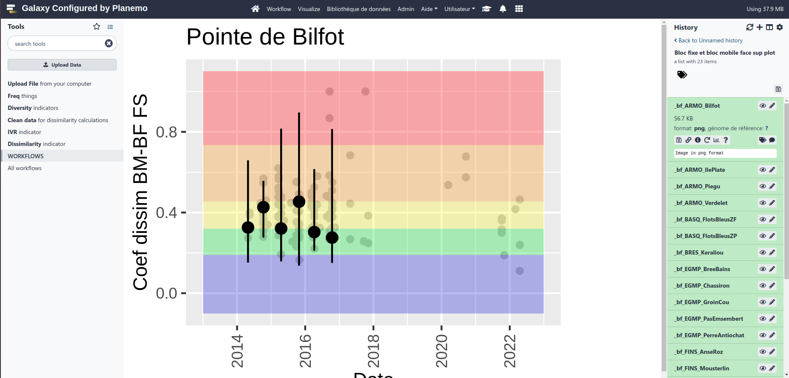

This tutorial will allow you to better apprehend the workflow for indicators on boulder fields. This will help you understand the effects of global and local changes on marine habitats, and the effectiveness of the management measures adopted, requires standardized monitoring and robust and sensitive indicators reflecting the state of the habitats.
The “mediolittoral boulder fields” habitat harbors a high diversity of micro-habitats and species due to its high structural heterogeneity and its intermediate position on the foreshore, which makes it one of the most diversified mediolittoral habitats and of high ecological interest along the French Channel-Atlantic coast. It is also a very attractive habitat for recreational fishing, which, through the reworking of the blocks, can impact the communities.
Thus, the “mediolittoral boulder fields” habitat has been the subject of several national and local initiatives (including LIFE+ “Experimentation for a sustainable and concerted management of recreational foot fishing in France” 2013-2017) to better assess its status and relate it to the pressure of foot fishing with a view to adapting local management, particularly through the network of Marine Protected Areas (Natura 2000, PNM, PNR etc.).
In particular, these projects have made it possible to develop a network of involved field players and managers and tools for evaluating the ecological status and pressure of fishing on foot:
the Visual Boulder Turning Indicator (VTI), which is similar to a “landscape” indicator to assess fishing pressure based on architectural criteria;
the Boulder Field Ecological Quality Index (BFEQ) - the subject of this report - based on biotic and abiotic variables that respond to the disturbance “boulder turning”.
Here we will go over the different steps in order to get those 2 indicators and more.
You can leave the tutorial and go bask on the main screen by clicking outside of the tutorial screen.
You can come back to where you left off the tutorial anytime by clicking level.
Hands-on: Log in to Galaxy
Open your favorite browser (Chrome, Safari or Firefox as your browser, not Internet Explorer!)
Browse to your Galaxy instance
Log in or register
Figure 1: Galaxy homepage
This is an image of Galaxy Ecology, located at usegalaxy.eu
The Galaxy homepage is divided into three panels:
Tools on the left
Viewing panel in the middle
History of analysis and files on the right
Figure 2: Galaxy interface explanation
The first time you use Galaxy, there will be no files in your history panel.
Now let’s focus on our workflow on boulder field ecological state
Figure 3: Workflow
Get data
Hands-on: Choose Your Own Tutorial
This is a "Choose Your Own Tutorial" section, where you can select between multiple paths. Click one of the buttons below to select how you want to follow the tutorial
Unzip your folder. In the folder three files .csv will interest us :
champbloc_ivr.csv
champbloc_qecb.csv
ficheterrain.csv
Hands-on: Data upload
Import the data into Galaxy
Open the Galaxy Upload Manager galaxy-upload
Select Choose local filesFigure 4: upload your data
Browse in your computer and get your ESTAMP files (select all three of them : champbloc_ivr.csv, champbloc_qecb.csv and ficheterrain.csv)
Press StartFigure 5: Start
Press CloseFigure 6: Close
You need to wait for the data to become green on the right panel
Figure 7: Data ready
Create a new history for this tutorial and give it a name (example: “Champs blocs indicators”) for you to find it again later if needed.
<p>Click the new-history icon at the top of the history panel.</p> <p>If the new-history is missing:</p> <ol> <li>Click on the galaxy-gear icon (History options) on the top of the history panel</li> <li>Select the option Create New from the menu</li> </ol>
Computing the Visual Boulder turning Indicator for each site
Based on the proportion of “turned” and “not turned” blocs this indicator vary from 0 to 5 and can be quickly used.
Hands-on: Use a tool
click on for example the IVRTool: toolshed.g2.bx.psu.edu/repos/ecology/cb_ivr/cb_ivr/0.0.0 tool or type ivr in the tools panel search box (top left)
The tool form will be displayed in the central Galaxy panel.
IVR
Go on the tool IVR
Hands-on: Calculating IVR
IVRTool: toolshed.g2.bx.psu.edu/repos/ecology/cb_ivr/cb_ivr/0.0.0 with the following parameters:
Press Run Tool (it can take some minutes to process it’s normal if you have to wait a bit especially if your internet connection is weak)
Three outputs will appear in your history panel on the right.
View graphs
Once it’s green, click on IVR plot
Then, click on the galaxy-eye (eye) icon of your output in the history panel.
The information is displayed in the central panel
Figure 8: IVR for Bilfot
In the top of the History panel (on the right) go on the search box
Click on the double arrows to display more filter options
Type the name of your site (for instance “Bilfot”) on the “Filter by name:” criteria then click on “No” for the “Visible:” criteria, as plots are created in a data collection and not directly visible on the history
Figure 9: Filter IVR for Bilfot
For your reports you need to download the ones you want. You won’t be able to vizualise them directly on Galaxy center panel !
Download results
Click on the output you are interested in for instance Reports
Click on galaxy-save (download)
Computing dissimilarity coefficient for each site
Dissimilarity
Cleaning out your data in order and then compute de dissimilarity coefficient.
Get the DissimilarityTool: toolshed.g2.bx.psu.edu/repos/ecology/cb_dissim/cb_dissim/0.0.0 tool
Hands-on: Calculate dissimilarity index
DissimilarityTool: toolshed.g2.bx.psu.edu/repos/ecology/cb_dissim/cb_dissim/0.0.0 with the following parameters:
param-select“Do you have data after the year 2021 ?”: No
param-text“Until when do you have data (write only the YEAR) ?”: 2021
Press Run Tool (it can take some minutes to process it’s normal if you have to wait a bit especially if your internet connection is weak)
View graphs
Once it’s green, click on type of plot you want to see
Then, click on the galaxy-eye (eye) icon of your output in the history panel.
The information is displayed in the central panel
Figure 10: face sup and inf dissimilarityFigure 11: bloc fixed and mobile dissimilarity
Download your results
Click on the output you are interested in
Click on galaxy-save (download)
Diversity indicators
Taking as input cleaned data from the Dissimilarity step tocompute diversity indicators.
Get the Diversity indicatorsTool: toolshed.g2.bx.psu.edu/repos/ecology/cb_div/cb_div/0.0.0 tool
Hands-on: Calculate diversity indicators
Diversity indicatorsTool: toolshed.g2.bx.psu.edu/repos/ecology/cb_div/cb_div/0.0.0 with the following parameters:
Further information, including links to documentation and original publications, regarding the tools, analysis techniques and the interpretation of results described in this tutorial can be found here.
Feedback
Did you use this material as an instructor? Feel free to give us feedback on how it went.
Did you use this material as a learner or student? Click the form below to leave feedback.
Batut et al., 2018 Community-Driven Data Analysis Training for Biology Cell Systems 10.1016/j.cels.2018.05.012
@misc{ecology-champs-blocs,
author = "Marie Josse and Yvan Le Bras",
title = "Champs blocs indicators (Galaxy Training Materials)",
year = "",
month = "",
day = ""
url = "\url{https://training.galaxyproject.org/training-material/topics/ecology/tutorials/champs-blocs/tutorial.html}",
note = "[Online; accessed TODAY]"
}
@article{Hiltemann_2023,
doi = {10.1371/journal.pcbi.1010752},
url = {https://doi.org/10.1371%2Fjournal.pcbi.1010752},
year = 2023,
month = {jan},
publisher = {Public Library of Science ({PLoS})},
volume = {19},
number = {1},
pages = {e1010752},
author = {Saskia Hiltemann and Helena Rasche and Simon Gladman and Hans-Rudolf Hotz and Delphine Larivi{\`{e}}re and Daniel Blankenberg and Pratik D. Jagtap and Thomas Wollmann and Anthony Bretaudeau and Nadia Gou{\'{e}} and Timothy J. Griffin and Coline Royaux and Yvan Le Bras and Subina Mehta and Anna Syme and Frederik Coppens and Bert Droesbeke and Nicola Soranzo and Wendi Bacon and Fotis Psomopoulos and Crist{\'{o}}bal Gallardo-Alba and John Davis and Melanie Christine Föll and Matthias Fahrner and Maria A. Doyle and Beatriz Serrano-Solano and Anne Claire Fouilloux and Peter van Heusden and Wolfgang Maier and Dave Clements and Florian Heyl and Björn Grüning and B{\'{e}}r{\'{e}}nice Batut and},
editor = {Francis Ouellette},
title = {Galaxy Training: A powerful framework for teaching!},
journal = {PLoS Comput Biol} Computational Biology}
}
Congratulations on successfully completing this tutorial!
 Marie Josse
Marie Josse
 Yvan Le Bras
Yvan Le Bras
Questions: